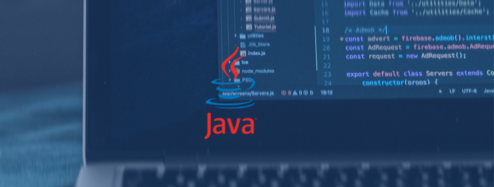
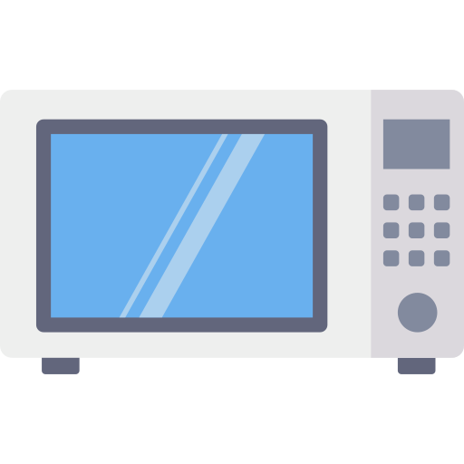

TRABAJOS

Microondas
El modelo base de un microondas esta dirigido para poder comprende mejor el funcionamiento de este aparato más alla de su físico, buscamos su comprensión via códigos y su compleja programación, este proyecto aun esta en camino!

Conversor
Este proyecto esta basado en convertir longitud,peso y tiempo para la facilidad al momento de querer convertir un dato, este trabajo fue creado y coordinado en Ecplise, java, mejorando asi una herramienta util para el usuario